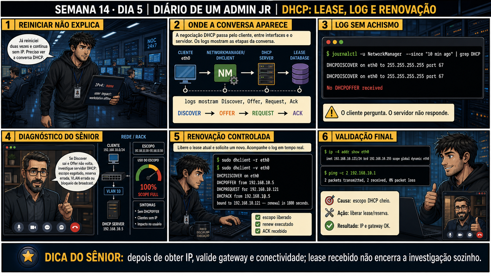

DIARIO DE UM ADMIN JR. | FASE 2 — REDES, DO IP AO DIAGNÓSTICO
🔗 Conecta com ontem: Ontem você aprendeu o D.O.R.A. e diagnosticou uma falta de
Offer. Hoje o cenário muda: os clientes JÁ tiveram IP antes, mas "já reiniciei duas vezes e continua sem IP".
Reiniciar não explica nada — é preciso ver a conversa DHCP de novo, e desta vez, olhar pro lado do servidor.
🔓 Privilégio de hoje: diagnosticar um escopo DHCP esgotado. Você ganha a
capacidade de reconhecer o padrão "Discover sai, Offer nunca volta, para vários clientes ao mesmo tempo" como
sintoma de escopo cheio — e de validar a correção com renovação de lease e teste de conectividade real.
Semana 14 · Dia 5 | Nível Júnior — Redes
DHCP: Lease, Log e Renovação
depois de obter IP, valide gateway e conectividade — lease recebido não encerra a investigação sozinho
ANTES DE ALTERAR, OBSERVE. DEPOIS DE ALTERAR, VALIDE.

1. O chamado
"Já reiniciei duas vezes e continua sem IP. Preciso ver a conversa DHCP." Vários
workstations sem IP ao mesmo tempo — um padrão que não é coincidência. journalctl mostra DHCPDISCOVER
repetido, sem nenhum DHCPOFFER. "O cliente pergunta. O servidor não responde" — em escala.
💡 Passa o mouse nas palavras destacadas pra ver uma dica rápida — clica se quiser a explicação completa com analogia.
2. O sênior te conta
Semana passada, outro ticket
Três workstations ficaram sem IP na mesma hora numa filial, e o chamado veio marcado "urgente, rede
caiu". Isso já era um sinal: quando VÁRIOS clientes falham DHCP ao mesmo tempo, raramente é o cliente —
é algo do lado do servidor. Rodei o log do servidor DHCP e vi o escopo 192.168.10.100-
192.168.10.150 em 100% de uso. Nenhum endereço livre pra oferecer, mesmo o servidor respondendo
normalmente a outras coisas. Liberei três leases de dispositivos desligados há semanas, e testei a
renovação com dhclient -r seguido de dhclient -v num dos afetados: Discover,
Offer, Request, Ack — completo.
Mas não parei aí. Confirmar o IP recebido não é o mesmo que confirmar que a rede funciona — rodei
ping pro gateway pra validar conectividade real antes de fechar o chamado. O ponto que fica:
lease recebido não encerra a investigação sozinho; valide o que o IP realmente possibilita.
3. Decodificador de conceitos
Clica em qualquer termo pra ver a definição completa e uma analogia do dia a dia:
4. Ferramentas e leitura da evidência
Comando
O que confirma
journalctl -u NetworkManager | grep DHCP
Mostra a conversa DHCP: Discover, Offer, Request, Ack.
dhclient -r eth0
Libera o lease atual da interface.
dhclient -v eth0
Solicita um novo lease, mostrando o processo em detalhe.
ping -c 2 gateway
Valida conectividade real após obter o IP, não só o IP em si.
$ journalctl -u NetworkManager --since "10 min ago" | grep DHCP
DHCPDISCOVER on eth0 to 255.255.255.255 port 67
DHCPDISCOVER on eth0 to 255.255.255.255 port 67
No DHCPOFFER received
--- renovação controlada ---
$ sudo dhclient -r eth0
$ sudo dhclient -v eth0
DHCPDISCOVER on eth0
DHCPOFFER from 192.168.10.5
DHCPREQUEST for 192.168.10.121
DHCPACK from 192.168.10.5
bound to 192.168.10.121 -- renewal in 1800 seconds
--- validação final ---
$ ip -4 addr show eth0
inet 192.168.10.121/24 brd 192.168.10.255 scope global dynamic eth0
$ ping -c 2 192.168.10.1
2 packets transmitted, 2 received, 0% packet loss
5. Laboratório guiado — marca conforme for testando
Segurança: execute os testes apenas em VM descartável e confirme nomes de discos, hosts e arquivos antes de cada comando.
Ação: observe o histórico de negociações DHCP no log.
$ journalctl -u NetworkManager | grep DHCP
Resultado esperado: sequência Discover/Offer/Request/Ack visível para leases bem-sucedidos.
Por quê: conhecer a sequência normal é o que permite reconhecer rápido quando ela para no meio.
Cilada comum: olhar só a última linha do log e perder o contexto de quantas tentativas de Discover já aconteceram.
Ação: configure um escopo pequeno e conecte mais clientes que ele comporta.
# exemplo: escopo de 3 endereços (192.168.10.100-102), 4+ clientes solicitando
Resultado esperado: os clientes excedentes mostram DHCPDISCOVER sem DHCPOFFER.
Por quê: reproduzir o escopo cheio de propósito é o que ensina a reconhecer esse padrão específico (múltiplos clientes falhando ao mesmo tempo) num caso real.
Cilada comum: confundir "um cliente sem Offer" (ontem, causa isolada) com "vários clientes sem Offer ao mesmo tempo" (hoje, escopo cheio) — são diagnósticos diferentes.
Ação: libere um lease (ou amplie o escopo) e teste a renovação no cliente afetado.
$ sudo dhclient -r eth0
$ sudo dhclient -v eth0
Resultado esperado: Discover, Offer, Request, Ack completos após a correção.
Por quê: testar a renovação depois da correção é o que confirma, na prática, que a causa identificada (escopo cheio) era mesmo a real.
Cilada comum: ampliar o escopo demais "pra nunca mais acontecer" sem entender por que ele encheu — pode estar mascarando um problema de leases não sendo liberados corretamente.
🧑🏫 Aqui entra o Mentor (em breve): se o cliente continuar sem Offer mesmo com escopo liberado, este é o ponto onde o chat com o Sênior-IA vai ajudar a checar VLAN e reserva de endereço.
Ação: confirme o IP recebido e valide a conectividade real.
$ ip -4 addr show eth0
$ ping -c 2 192.168.10.1
Resultado esperado: IP configurado e ping ao gateway com 0% de perda.
Por quê: essa validação final é o que separa "recebi um número" de "a rede realmente funciona pra esse dispositivo".
Cilada comum: fechar o chamado assim que o IP aparecer, sem testar o gateway — o IP pode estar certo e ainda assim não haver rota funcional.
Ação: documente causa, ação e resultado do incidente.
# causa: escopo DHCP em 100% de uso
# ação: liberação de leases obsoletos
# resultado: IP obtido, ping ao gateway OK
Resultado esperado: relatório completo do incidente de DHCP — reproduzindo o painel 6 da prancha de hoje.
Por quê: registrar que a causa era "escopo cheio" (não um problema de cliente) evita que o próximo técnico repita o mesmo diagnóstico do zero.
Cilada comum: registrar só "IP liberado, resolvido" sem anotar que era escopo cheio — sem isso, o mesmo padrão em outra filial não é reconhecido rápido.
6. Antes de ver as opções — tenta responder
🧠 Recall ativo: se vários clientes, ao mesmo tempo, enviam Discover mas nenhum recebe Offer,
qual causa é mais provável do lado do servidor?
Um
escopo
100% cheio (scope full) é a causa clássica quando MÚLTIPLOS clientes falham ao mesmo tempo — o servidor
não tem mais endereços livres pra oferecer, então nenhum Offer sai, mesmo o servidor estando no ar e
respondendo normalmente a outras coisas.
QUESTÃO 1 de 3
7. Questão comentada — clica numa alternativa
O diagnóstico do sênior mostra: escopo 192.168.10.100-192.168.10.150, uso do
escopo em 100% (scope full). Qual é a ação correta pra resolver o problema imediato?
💡 Analogia do Sênior para Fixar: A renovação de lease no T1 (50% do tempo) é o hóspede ligando na recepção na metade da estadia para estender a diária: renova direto com o servidor original sem broadcast.
QUESTÃO 2 de 3 — cenário de erro real
7.1 dhclient -v retornou "bound to 192.168.10.121", com Ack recebido. Um colega já considera o
chamado resolvido
O painel 6 da prancha de hoje mostra uma validação adicional: ping ao gateway.
Por que confirmar o IP obtido não é suficiente — por que validar o gateway
também é necessário?
💡 Analogia do Sênior para Fixar: O tempo T2 (87.5% do tempo) é o alarme de desespero: se o servidor original não respondeu, o cliente grita em broadcast pedindo ajuda para qualquer outro servidor DHCP da rede.
QUESTÃO 3 de 3 — detalhe que confunde todo iniciante
7.2 "dhclient -r e dhclient -v fazem a mesma coisa, só em ordem diferente?"
Um colega acha que os dois comandos são intercambiáveis, ambos "renovando" o IP.
Qual é a diferença real entre eles?
💡 Analogia do Sênior para Fixar: Reservas estáticas por MAC no DHCP são vagas marcadas no estacionamento: o servidor sempre entrega o mesmo IP fixo para aquele hardware específico centralizando a gestão.
8. Procedimento profissional
Quando vários clientes falham DHCP ao mesmo tempo, suspeite de escopo cheio, não do cliente.
Confirme com o log do lado do servidor: quantos endereços estão em uso versus disponíveis.
Libere leases obsoletos ou amplie o escopo, conforme a causa confirmada.
Teste a renovação com dhclient -r seguido de dhclient -v, acompanhando o log.
Valide não só o IP recebido, mas a conectividade real com ping ao gateway.
Prevenção
Monitore proativamente o percentual de uso do escopo DHCP antes que chegue a 100% — um
alerta em 80-90% dá tempo de ampliar o escopo ou liberar leases obsoletos antes que vire um chamado
urgente com vários dispositivos afetados de uma vez.
9. Validação e encerramento
Um padrão de múltiplos clientes falhando ao mesmo tempo foi corretamente atribuído a escopo, não a cliente.
O log do lado do servidor confirmou a causa antes de qualquer correção.
A renovação foi testada com dhclient -r + dhclient -v, acompanhando o processo completo.
A validação final incluiu ping ao gateway, não só o IP recebido.
Rollback e limites
dhclient -r é reversível solicitando um novo lease em seguida (dhclient -v) —
não existe risco de ficar sem IP permanentemente, desde que o servidor DHCP esteja funcionando. O cuidado
real é confirmar a causa (escopo, VLAN, reserva) antes de ampliar escopos ou mexer em configurações de rede.
💡 Sobre repetição espaçada: "lease recebido não encerra a investigação
sozinho" conecta com a Semana 10 (healthcheck cobrindo múltiplos aspectos, não só um sintoma) — mesma
disciplina de validação completa. O Anki vai conectar os dois.
10. Resposta final
Alternativa correta: A. Nesta aula, a ação certa foi liberar leases
não utilizados (ou ampliar o escopo) e testar a renovação com dhclient -r + dhclient -v. O ponto central
do caso é este: depois de obter IP, valide gateway e conectividade — lease recebido não encerra a
investigação sozinho.
🏁 SEMANA 14 CONCLUÍDA
DNS conceitual, TTL/cache, /etc/hosts vs
resolv.conf, DHCP D.O.R.A. e diagnóstico de escopo — os dois serviços que mais parecem "a internet inteira
fora do ar" quando quebram agora têm método. A Semana 15 muda de tema: firewall, e o risco real de se
trancar fora do próprio servidor.
🔓 O que você desbloqueou hoje
Capacidade de diagnosticar escopo DHCP esgotado e validar uma correção com
conectividade real, não só posse de IP. Isso fecha a Semana 14. Amanhã começa a Semana 15: firewall
stateful, e o erro clássico de aplicar um deny-all e se trancar fora da própria sessão remota.